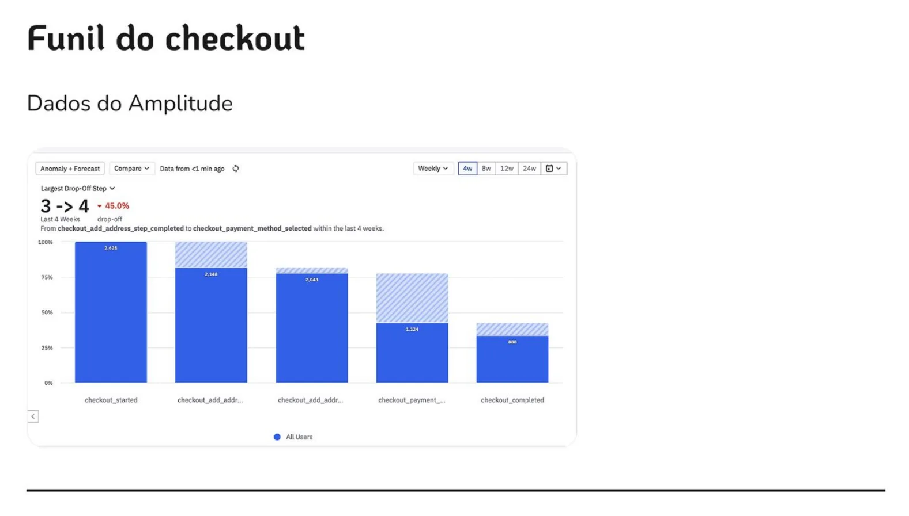
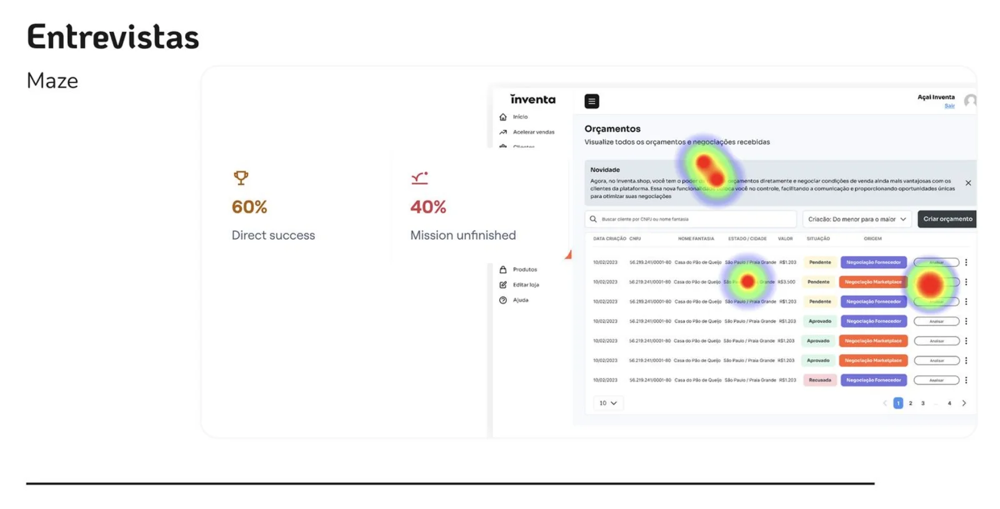
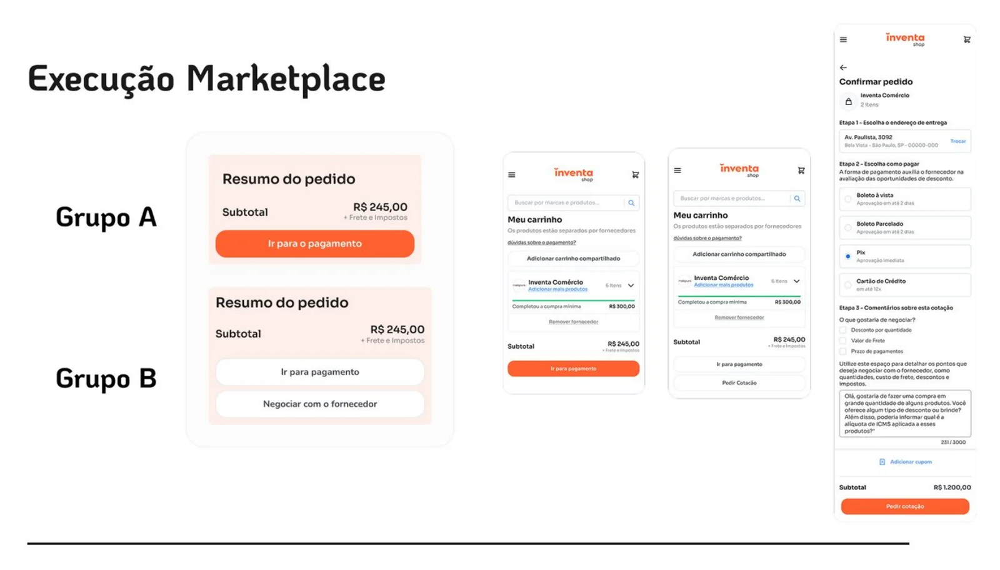
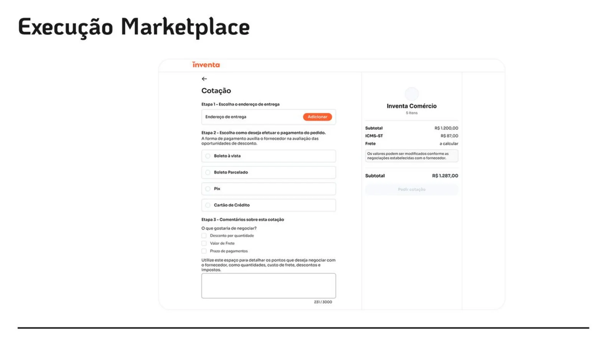
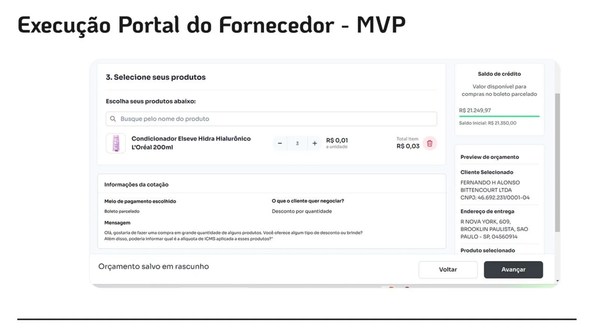
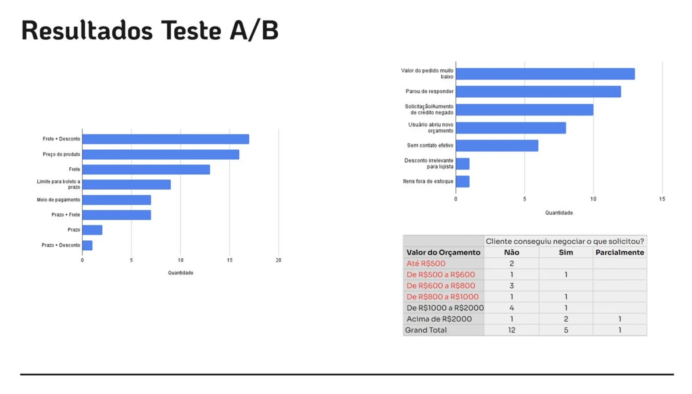
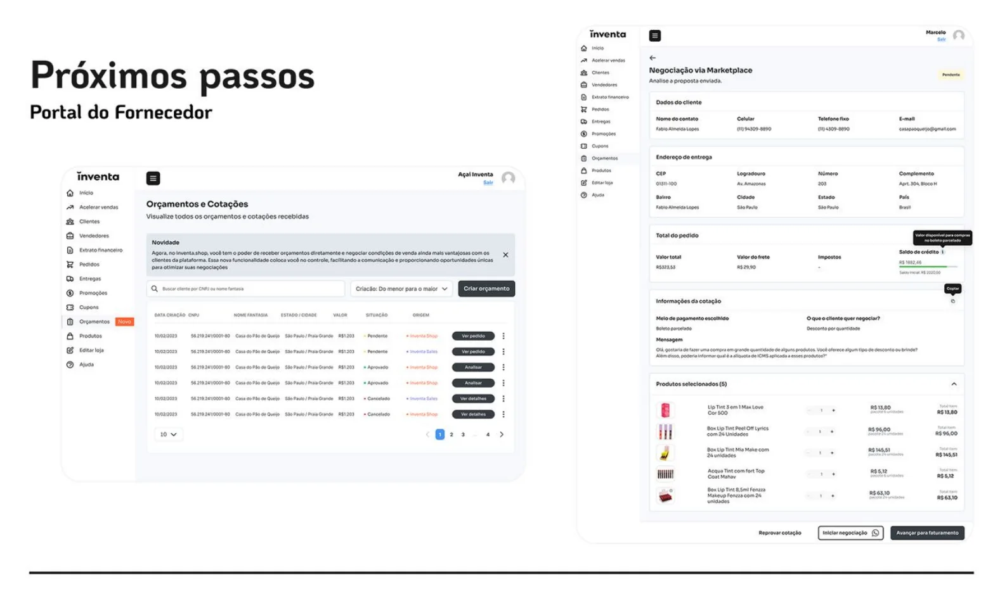

Inventa · Marketplace B2B · Jul 2023 – Jun 2024
Cotações no marketplace
Só metade dos lojistas que começavam a pagar terminava o pedido. Desenhei um fluxo para eles negociarem com o fornecedor antes de pagar e validamos a ideia num teste A/B.
+28%
no ticket médio dos pedidos que passaram por cotação
R$ 1.300 contra R$ 1.014 do grupo sem cotação
+9%
em pedidos no grupo com acesso à cotação
205 contra 188 pedidos
+6%
em GMV no grupo com acesso à cotação
R$ 202,6 mil contra R$ 190,7 mil
2.969
lojistas sorteados para o teste
1.438 no grupo A, sem cotação, e 1.531 no grupo B, com cotação
Teste A/B de 15 dias, só com a operação 1P. Os números comparam o grupo B, com cotação, ao grupo A, sem cotação.
- Papel
- Product Designer no squad de Sales Conversion e Design System
- Escopo
- Marketplace e o MVP do Portal do Fornecedor
- Métodos
- Amplitude, entrevistas, teste no Maze e teste A/B
- Duração do teste
- 15 dias, com cerca de 3 mil lojistas
O problema
Nos dados do Amplitude, só 50% das pessoas que iniciavam um pagamento chegavam ao fim.
No atacado B2B, negociar já é o normal: quem compra em quantidade espera conversar sobre preço, frete e prazo antes de fechar. O marketplace não dava espaço para isso.
- Hipótese 1: os lojistas acham os preços altos e querem negociar o pedido.
- Hipótese 2: quem vai ao checkout ainda não está pronto para comprar.

Pesquisa
Entrevistei fornecedores do top 50 em GMV para entender como eles já negociavam fora da plataforma. Quatro achados mudaram o desenho:
- O WhatsApp era o principal canal entre fornecedor e comprador.
- Desconto progressivo era a prática mais comum: quanto maior a compra, maior a margem para negociar.
- Em empresas pequenas e médias, a negociação passava pela aprovação de um gestor.
- O frete costumava ser fixo, com frete grátis a partir de um valor mínimo, em média acima de R$ 500.
Antes do teste A/B, validei o protótipo no Maze: 60% das pessoas concluíram a tarefa pelo caminho direto e 40% não terminaram.

A solução
No carrinho, o lojista passou a ter duas saídas: pagar direto ou negociar com o fornecedor. Quem negocia preenche uma cotação curta com quantidade, condições e uma mensagem.
Do outro lado, o MVP do Portal do Fornecedor recebe a cotação e responde. Padronizei no design system as tags de status, tabelas e componentes do portal para o fluxo crescer sem exceções.

Do carrinho à cotação
A cotação abre a partir do resumo do pedido, sem tirar o lojista do contexto da compra. A confirmação deixa claro o que acontece depois e quando ele recebe a resposta.

Portal do Fornecedor
O fornecedor vê as cotações numa tabela única, com status padronizados e acesso rápido ao pedido. O MVP serviu para validar a negociação sem construir um sistema completo de antemão.

Resultados
| Grupo A, sem cotação | Grupo B, com cotação | Diferença | |
|---|---|---|---|
| Lojistas sorteados | 1.438 | 1.531 | |
| GMV | R$ 190.665,84 | R$ 202.629,46 | +6% |
| Pedidos | 188 | 205 | +9% |
| Ticket médio | R$ 1.014,18 | R$ 1.300,27 nos pedidos via cotação R$ 1.083,58 nos pagos direto | +28% via cotação |
No grupo B, 17% dos lojistas usaram a cotação: foram 73 cotações e 18 pedidos fechados, somando R$ 23,6 mil em GMV.
Leitura honesta: 18 pedidos via cotação é uma amostra pequena e o teste durou 15 dias. O sinal foi forte o suficiente para seguir, não para dar o problema como resolvido.

O que aprendi
- Havia um descasamento entre o que os compradores esperavam negociar e o que os fornecedores aceitavam oferecer.
- Muitos cancelamentos e margens baixas nos pedidos de cotação pediam um valor mínimo para negociar.
- Muitos lojistas usaram a negociação para pedir crédito, um sinal de uma necessidade que não estava no nosso radar.
- Melhorias de usabilidade ao longo do fluxo podiam reduzir a confusão no envio da cotação.
Os próximos passos foram um novo teste A/B sobre o peso do preço e do frete na conversão, experimentos com crédito em parceria com o time de Finance e o desconto progressivo direto no carrinho.

Contato
Gostou do que viu? Vamos conversar.